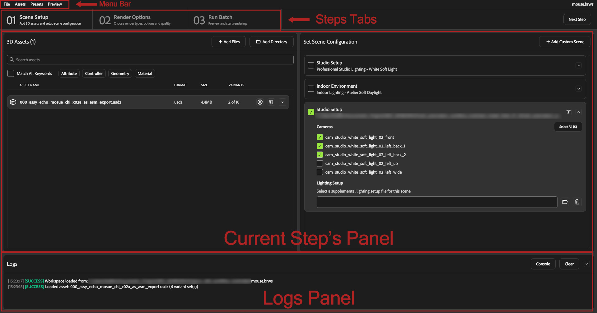
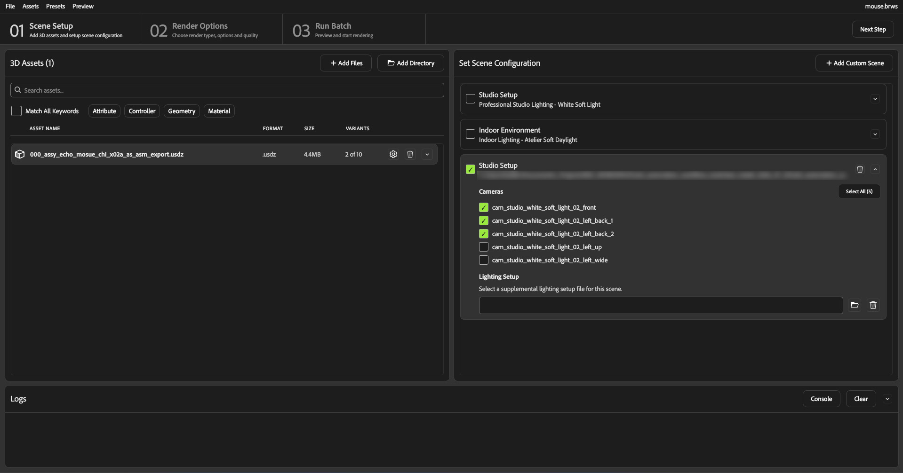
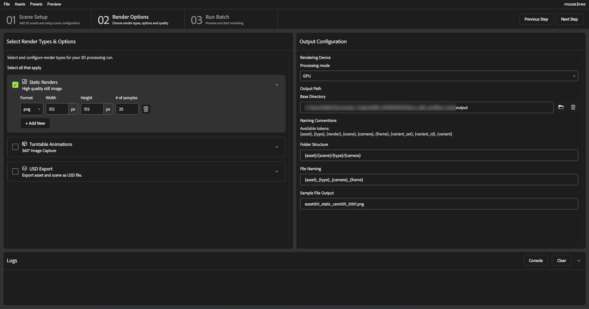
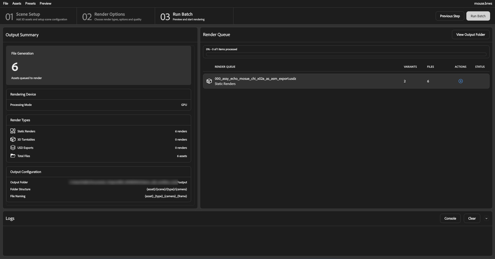

Batch Renderer Guide
The Batch Renderer lets you queue up one or more 3D assets, choose which of their USD variants to render, place them into one or more lighting/camera scenes (built-in or your own), and generate static renders, turntable animations, and/or USD exports for every asset/scene/camera/variant combination as a single batch.
Installation
Navigate to the
workflow_toolsfolder.Run
install.baton Windows orinstallon macOS.Wait for the installation to complete. This may take a few minutes.
Once the installation is complete, the GUI launchers and CLI
.batfiles are available in theworkflow_toolsfolder.
Starting the UI
Double-click the Substance3DRenderStudio.bat file in the workflow tools
folder, run batch-render-ui (or its alias brui) from the command
line, or run batch_rendering/main.py with Python (SSCA required).
Environment Variables
Variable |
Default |
Description |
|---|---|---|
|
|
Logging level ( |
Logs are written to logs/batch_renderer_ui.log. The Console button in
the Logs Panel opens this same file in the OS’s default text editor.
UI Layout
{kind=link}

Click on the image to view full size
The application is a three-step wizard (01 Scene Setup, 02 Render Options, 03 Run Batch) with a menu bar spanning the very top, a numbered tab header below it, the current step’s panels in the middle and a collapsible Logs panel.
Tab Header
Steps
Each step is shown as a numbered tab with a title and a short subtitle:
Tab |
Title |
Subtitle |
|---|---|---|
01 |
Scene Setup |
Add 3D assets and setup scene configuration |
02 |
Render Options |
Choose render types, options and quality |
03 |
Run Batch |
Preview and start rendering |
Click a tab to jump to it directly, or use Previous Step / Next Step on the top right of the window. If a batch or single job is currently rendering or paused, navigating away from Run Batch prompts for confirmation; confirming cancels the active render (the in-progress job becomes Cancelled, jobs that had not started remain Pending, and jobs already completed stay Completed (see Render Queue Panel for the full cancel semantics)).
Step 1 - Scene Setup
{kind=link}

Click on the image to view full size
3D Assets Panel
Header reads 3D Assets, or 3D Assets (N) once assets are present.
Adding Assets
Click Add Files to open a file browser and select one or more asset
files (.usd, .usda, .usdc, .usdz); each becomes a new asset
card, with a progress dialog while it loads. Click Add Directory to
import every supported USD file at the top level only of a chosen folder
(not recursive). Both actions are duplicated under Assets in the menu
bar.
Importing Assets from a Spreadsheet
Assets → Import Spreadsheet… in the menu bar let’s you bulk import assets. The dialog lets you pick a
CSV or Excel (.xlsx) file and, optionally, a working directory used to
resolve relative asset/preset paths.
Column |
Required |
Description |
|---|---|---|
|
Yes |
Path to the asset file. Relative paths are resolved against the dialog’s working directory first, then the spreadsheet’s own folder. |
|
No |
Name of a variant set to select a variant in. Used together with |
|
No |
Variant identifier to select within |
|
No |
Path to a |
Rows are grouped by (model_path, preset_path): multiple rows for the same
asset (and preset) collapse into one asset with multiple variant selections;
the same asset file listed twice with two different preset_path values
produces two separate asset entries. A row missing model_path is skipped
with a log warning rather than aborting the whole import. If an asset’s own
preset file exists but fails to load, the asset is still imported using the
session configuration, with a warning. After import, a summary dialog reports
any missing files, unreadable presets, or other warnings.
For example, a spreadsheet with these rows:
|
|
|
|
|---|---|---|---|
|
|
|
|
|
|
|
|
|
|
|
|
|
|
|
|
|
|
produces two separate asset entries for chair.usd : one grouping the two Material
selections (no preset), the other grouping the two Color selections under studio_preset.json ,
plus a logged warning for the last row, which is skipped because it has no model_path.
Asset Cards
Each card shows the asset’s icon, filename, format, file size, a selected of total variant count, a delete button, and (if the asset has variant sets) an expand/collapse arrow.
Preset button (cog wheel icon) : Assigns or removes a per-asset preset. Assigning opens a dialog that also lets you set a working directory for resolving that preset’s relative scene/lighting paths. Once assigned, the preset’s filename is shown on its own line below the asset name (
Preset: name), and the button’s icon/tooltip switches to Remove Preset.Delete button (trash icon, tooltip “Remove Asset”) : Removes the asset from the batch.
Error/warning icons : Shown next to the filename for a missing/invalid asset file, an invalid custom preset, or a controller-conflict warning (see below).
Variant Sets and Variants
Expanding an asset card lists its USD variant sets, each headed Variant Set: {name}, with a Select All / Deselect All toggle (shown only when the set has more than one variant) and one checkbox per variant. All variants are selected by default.
Selection is genuine multi-select: more than one variant within the same set can be checked at once. Variant sets can also be nested : selecting a variant can reveal child variant sets owned specifically by that variant, shown indented beneath it; deselecting a variant (or the whole set) recursively clears every descendant selection under it.
Only selected variants contribute to the render count: each selected variant contributes the product of its own nested child-set counts (a variant’s children only multiply within that variant’s own branch, never against sibling or top-level sets), and a set with nothing selected counts as one unvaried combination rather than zero.aw
If a selected variant carries a CONTROLLER opinion that forces another
variant set to a specific variant, but that target set also has its own
independent selection, a warning icon appears on the asset card to warn the user about unexpected
render output
Searching and Filtering
Type in Search assets… to filter by filename, variant set name, or variant identifier. The full file path and preset filenames are not searched.
Enable Match All Keywords to require every space/comma-separated search term to match (AND). By default any term is sufficient (OR).
Click an opinion-type tag (Attribute, Controller, Geometry, Material) to only show variant groups containing that opinion type. Selecting multiple tags requires all of them to be present on the same variant.
Matching automatically expands an asset card (and its nested variant-set rows) so the matching variant is visible.
Set Scene Configuration Panel
Lists every available scene as an expandable card. Two scenes ship with the application by default :
Studio Setup (“Professional Studio Lighting - White Soft Light”)
Indoor Environment (“Indoor Lighting - Atelier Soft Daylight”)
They are defined in the bundled
batch_rendering/assets/default_scenes.json file (id, name,
description, file_path, frame_asset, frame_fit,
can_select_background_color, default_background_color).
Selecting a Scene
Check a scene’s checkbox to include it in the batch (this also expands the card; unchecking collapses it again). At least one scene, with at least one camera, must be selected before rendering.
Adding a Custom Scene
Click Add Custom Scene in the panel header and select a USD scene file
(.usd, .usda, .usdc, .usdz). The scene is added as a new
card, named after the file, and is automatically selected.
Custom scenes can be removed via their own Remove Custom Scene
button (with a confirmation prompt); built-in scenes cannot be removed.
Cameras
Expanding a scene card lists every camera found in its USD file (loaded in the background, with a “Loading Scenes…” progress dialog on first use). Check the cameras to render from, or use Select All / Deselect All.
Lighting Setup
Click the file field or the folder button (tooltip “Browse for lighting
file”) to choose a supplemental lighting file (.hdr, .exr,
.sbsar, .usd, .usda, .usdz) for the scene, or the trash
button (“Clear lighting file”) to clear it. A missing file or unsupported
extension is flagged immediately as an error. A USD
lighting file that turns out to contain no lights is only caught at render
time (logged as a warning, not shown in this panel). .hdr/.exr/
.sbsar environment maps are not checked for this at all. The scene’s own
lighting is used when no custom file is set.
Frame Fit
A numeric field controlling how tightly the camera frames the asset for this
scene, clamped between 0.1 and 10.0.
Frame Fit (and Background Color, below) are
only shown for built-in scenes; a custom scene only gets the Cameras and
Lighting Setup sections.
Background Color
Shown only for scenes that support a custom background (both built-in scenes do). Check Use Custom Color or type in any of the fields to enable the color picker. Leaving Use Custom Color unchecked uses the scene’s own default background.
No drag-and-drop is supported anywhere in this step; assets and scene files must be added through the file-browser buttons/menu actions above.
Step 2 - Render Options
{kind=link}

Click on the image to view full size
The Render Options step shows the Select Render Types & Options panel on the left (“Select all that apply”) and Output Configuration panel on the right.
Render Options Panel
Each render type is a checkbox card; checking it auto-expands its settings. At least one render type must be enabled before rendering.
Static Renders
High quality still image. : Expanding the card shows a grid of renditions (Format, Width (px), Height (px), and # of samples). Click + Add New to add another rendition (e.g. a small preview alongside a full-resolution final render), or the trash icon to remove a row. Every enabled rendition is produced for every scene/camera/variant combination.
Turntable Animations
360° Image Capture. : Configure Format, Width, Height, # of samples, and Frames (number of images around the full rotation). Turntable rendering always uses its own ring of auto-generated cameras framed around the asset (one per configured frame) rather than the scene’s selected cameras.
USD Export
Export asset and scene as USD file. : Choose the output Format
(.usd, .usda, .usdz, or .usdc). Unlike static/turntable
renders, USD export produces exactly one file per selected scene. It does
not multiply by cameras or variants.
Output Configuration Panel
Rendition Device
The Processing mode dropdown (CPU, GPU, GPU Rasterization) selects the rendering technique used for every rendition of every render type in this configuration.
Output Path
Base Directory is the root folder renders are written under. Click the folder icon to browse for a directory, or the trash icon to clear it. A validation message appears below the field if the path (or its parent directory) does not exist or is not writable.
Naming Conventions
Build the output Folder Structure and File Naming patterns from the available tokens:
Token |
Description |
|---|---|
|
Asset filename without extension |
|
Render type ( |
|
Rendition identifier |
|
Scene/template name |
|
Camera name |
|
Frame number (turntable) or |
|
Variant set name(s) |
|
Selected variant identifier(s) |
|
Combined variant path/name |
Sample File Output shows a live preview of the resulting filename (using placeholder demo values) as you edit the naming pattern. The output file extension is always added automatically based on the rendition’s format.
Step 3 - Run Batch
{kind=link}

Click on the image to view full size
The Run Batch step shows the Output Summary panel on the left and Render Queue panel on the right. Opening this step (re)generates the render queue (one job per asset) from the current scene, render option, and output configuration (or from an asset’s own preset, if it was imported or assigned one).
Output Summary Panel
File Generation : total number of files that will be produced across the whole queue.
Rendering Device : Processing Mode (the currently selected mode).
Render Types : file counts for Static Renders, 3D Turntables, and USD Exports, plus a Total Files running total.
Output Configuration : Output Folder, Folder Structure, and File Naming.
Render Queue Panel
Header reads Render Queue with a View Output Folder button. One card per asset (job) shows the asset’s display name, a description of enabled render types, a Variants count, a Files count (total output files for that job), an action icon, and a status icon.
Status |
Meaning |
|---|---|
Pending |
Not yet started. A Start Render button starts this job individually. |
Processing |
Currently rendering, with a live progress bar. A Pause Render button is available outside of batch mode. |
Paused |
Rendering paused mid-job (resumable, already-rendered files are skipped on resume). Resume Render and Cancel Render buttons appear outside of batch mode. |
Completed |
Finished successfully. |
Failed |
Stopped on an error. Clicking the status icon (“Failed - click for details”) opens a Render Error Details dialog with the captured error text. A Retry Render button resets and re-runs the job. |
Cancelled |
Stopped by the user (not resumable). A Retry Render button resets and re-runs the job. |
Per-job action buttons are only shown while that job is idle or being run individually outside a full batch; during a full batch run they are hidden, and Pause Batch / Resume Batch / Cancel Batch buttons drive the whole run instead.
Running Jobs
Run Batch (top-right) renders every pending job in order, showing overall progress at the top of the panel.
Clicking a job’s own Start Render button instead starts only that job.
Pause Batch requests a pause that takes effect at the render’s next safe checkpoint (so there is a brief transitional “pausing” state before it settles into Paused); Resume Batch continues with the remaining pending/paused jobs; Cancel Batch stops immediately. A job that was actively rendering or paused becomes Cancelled (retryable), any already-Completed jobs stay Completed, and jobs that had not started yet remain Pending (not reset, they were simply never touched).
When a multi-job batch finishes, a summary line is written to the Logs Panel (not a popup dialog): success if every job completed, a warning if only cancellations occurred, or an error breakdown if anything failed, each with the completed/failed/cancelled counts. A single-job run logs no summary.
Viewing Output
Click View Output Folder in the panel header to open the configured output directory in the system file browser (the folder is created first if it does not yet exist).
Render Preview
There is a single preview entry point: Preview → Interactive Preview in the menu bar, usable from any step. It always composites the first asset in the collection into the session’s currently selected scenes, cameras, lighting, and background (i.e. it shows exactly what those combinations will look like).
Preview Controls
When an embedded USD/Hydra viewer is available (requires OpenUSD built with
Usdviewq and PySide6; see USD_INSTALL_PATH/OPENUSD_PATH below),
the Preview dialog shows the composited scene interactively and offers:
Control |
Description |
|---|---|
Preview Mode |
Static Render (renders a quick preview image using the batch renderer engine) or usdview (live interactive viewport navigation with orbit/pan/zoom). |
Preview Processing Mode |
CPU, GPU, or GPU Rasterization. Used only for the Static Render preview mode. |
Preview Quality |
Static Render mode only. A named preset. Values are |
Max Refinement Passes |
Shown only for CPU processing in usdview mode: |
3D Asset / Scene / Camera cyclers |
Step through every asset, selected scene, and that scene’s selected cameras without closing the dialog. |
Variant Set cyclers |
One row per variant set on the current asset (when it has more than one variant); steps through variant IDs to preview different combinations. |
Open usdview |
Launches the current preview stage in external |
If the embedded viewer is unavailable, opening a preview falls
back directly to launching external usdview on the raw asset file (no
scene/camera/variant composition).
Variable |
Description |
|---|---|
|
Path to an OpenUSD install providing |
|
Direct path to the |
|
Set to |
|
Set to |
Preview → Validate Workspace runs the same validation used before Run Batch on demand, without needing to open the Run Batch step: it logs the result and shows a “Validation Passed” / “Validation Failed” dialog pointing you at the Logs Panel for details.
Logs Panel
A collapsible Logs panel spans the bottom of the window, showing real-time feedback from scene loading, validation, and render operations.
Color |
Type |
Meaning |
|---|---|---|
Blue |
Info |
Normal progress updates |
Green |
Success |
Operations completed successfully |
Orange |
Warning |
Non-fatal issues that may need attention |
Red |
Error / Validation Error |
Failures and validation errors |
Clickable log entries : Validation messages that reference a specific asset or variant set are underlined links; clicking one navigates to the related asset or variant set, with the affected asset, variant set, and field shown as context beneath the message.
Console : Opens logs/batch_renderer_ui.log (the application’s own
log file) in the OS default text editor.
Clear : Clears all log entries.
The panel can be collapsed with the toggle button in its header.
Presets
Session Presets
Save Preset / Load Preset (Presets menu) read and write a JSON file:
{
"version": "0.2",
"render_config": {
"version": "0.2",
"renders": [ "... same shape as the CLI's renders array ..." ],
"templates": [ "..." ],
"variant_sets": [ "..." ],
"outputs": { "..." }
},
"scenes": [ "... cached per-scene camera lists, used to redraw the UI without re-reading every scene file ..." ]
}
The nested render_config block holds the actual render settings:
renders (the enabled render types and their quality settings, from the
Render Options Panel), templates (the selected scenes, cameras, and
lighting, from the Set Scene Configuration Panel), variant_sets (each
asset’s variant selections), and outputs (the output path and naming
pattern, from the Output Configuration Panel). Reset to Defaults
restores the session configuration to application defaults without touching
uploaded assets.
Export Render Config
Presets → Export Render Config… writes the current session’s render
configuration directly in the CLI’s own top-level shape
(version/renders/templates/variant_sets/outputs, with no
wrapping and no scene cache). The file it produces can be passed straight to
cli_batch_render run --override-config.
Per-Asset Presets
When importing assets from a spreadsheet (see Importing Assets from a
Spreadsheet), a preset_path column (or the per-card Assign Preset
action) can point an individual asset at its own preset JSON file (same
format as above). That asset renders using its own scene/render/output
configuration instead of the session’s, letting a single batch mix assets
that need different scenes, resolutions, or output locations.
Typical Workflow
1. Start the UI
Double-click the Substance3DRenderStudio .bat file, run
batch-render-ui, or run batch_rendering/main.py with Python.
2. Create or Open a Workspace
File → New Workspace to start from scratch, or File → Open Workspace…
(Ctrl+O) to reload an existing .brws file.
3. Add Assets
On the Scene Setup step, click Add Files or Add Directory, or use Assets → Import Spreadsheet… to bring in a whole spreadsheet of assets and variant selections at once.
4. Choose Variants
Expand an asset card and uncheck any variants you do not want rendered. Remember that variant sets can nest under a specific variant, and multiple variants within one set can be checked at once.
5. Configure Scenes
In Set Scene Configuration, select one or both built-in scenes (or add a custom one) and check the cameras to render from .Freshly added and built-in scenes alike start with no cameras selected. Optionally set a custom background color, lighting file, or frame fit per scene.
6. Choose Render Types
Move to Render Options. Enable Static Renders and set a resolution and sample count, and/or enable Turntable Animations or USD Export.
7. Configure Output
In Output Configuration, set the processing mode, base output directory, and folder/file naming pattern. Check Sample File Output to confirm the pattern looks right.
8. Preview (Optional)
Use Preview → Interactive Preview to see the first asset composited into the currently selected scenes/cameras before committing to a full batch.
9. Save the Workspace
Ctrl+S saves to a .brws file, clearing the unsaved-changes indicator.
10. Run the Batch
Move to Run Batch. Review the Output Summary for the total file count, then click Run Batch and confirm. Watch progress in the Render Queue panel; use Pause Batch / Cancel Batch if needed.
11. Collect the Output
Once the batch completes, click View Output Folder to open the rendered files in the system file browser.
Tips
Nested, multi-select variants : variant sets can nest under a specific variant, and more than one variant within a set can be checked at once. Watch for the controller-conflict warning icon when a
CONTROLLERopinion and an independent selection on the target set disagree.New scenes start with no cameras selected : even the two bundled scenes need their cameras checked (or Select All) before they will pass validation; this applies to custom scenes too.
Pause is safe, Cancel is not : pausing preserves already-rendered files and can be resumed; cancelling marks the in-flight job Cancelled (retryable) and leaves not-yet-started jobs Pending, but any partial progress on the cancelled job must be re-rendered.
The Processing Mode is global to the session configuration : switching it on the Output Configuration panel changes it for every rendition (static, turntable, and USD export), not per-rendition.
Search is filename-only : the 3D Assets search matches the filename, variant set names, and variant identifiers, but not the full file path or a preset’s filename.
Three different file formats : a workspace (
.brws) captures everything (assets, scene/render/output configuration, and the scene camera cache); a preset (.json) captures just the scene/render/output configuration (plus camera cache) for reuse across workspaces; a CLI render-configuration file is the streamlined formatcli_batch_renderconsumes. Use Presets → Export Render Config… to generate the CLI format directly from the current session.
CLI
The cli_batch_render command-line tool runs the same batch rendering
engine as the UI, without a graphical interface. Use it for headless batch
builds, CI pipelines, or scripted automation.
After installation, the CLI entrypoint is available in the workflow_tools
folder as Substance3DRenderStudioCLI.bat on Windows or
Substance3DRenderStudioCLI on macOS/Linux. You can also run
cli_batch_render (or its aliases batch-render, br) from the
command line after activating the Python environment, or run
batch_rendering/cli/main.py with Python directly (SSCA required).
Logging
The CLI has no environment-variable configuration and no file-logging
option and will always log to the console
(warnings and errors only by default, info messages with -v, debug
messages with -vv).
Command Syntax
cli_batch_render has two subcommands.
run
cli_batch_render run --input <asset_or_directory> [OPTIONS]
Option |
Short |
Required |
Description |
|---|---|---|---|
|
|
Yes |
Path to a single 3D asset file, or a directory of assets, to render ( |
|
/ |
No |
Path to a configuration file ( |
|
/ |
No |
Add a static beauty rendition, replacing whatever |
|
/ |
No |
Same as |
|
/ |
No |
Output directory, prepended to the configured output path. |
|
|
No |
Working directory used to resolve relative scene/lighting paths inside the configuration (falls back to the config file’s own directory, then the current directory). |
|
|
No |
Increase verbosity level (use |
While rendering, press Ctrl+C to gracefully pause: the current render
completes, then rendering stops (the same pause/resume mechanism used by the
UI’s job pause).
generate-template
cli_batch_render generate-template [-o <output.jsonc>]
Writes a copy of the bundled default configuration file (the same one used
when run is called without --override-config) to -o/--output
(default ./batch_render_template.jsonc), as a starting point to edit.
Exit Codes
Code |
Meaning |
|---|---|
|
Success |
|
File not found, invalid/missing CLI arguments (Click usage errors), or an invalid/unparseable configuration |
|
Processing failure (rendering, export, or file-system error) |
|
Cancelled by user ( |
Quick Examples
Render a single asset with the bundled default configuration:
cli_batch_render run -i ./assets/my_asset.usd
Render every supported asset file in a directory:
cli_batch_render run -i ./assets/
Render with a custom config:
cli_batch_render run -i ./assets/my_asset.usd --override-config ./my_config.jsonc
Generate only a static render, using the bundled preset’s own static settings:
cli_batch_render run -i ./assets/my_asset.usd --static
Generate both static and turntable renders to a specific output directory:
cli_batch_render run -i ./assets/my_asset.usd --static --turntable --output ./renders
Resolve a custom config’s relative scene/lighting paths against a working directory:
cli_batch_render run -i ./assets/my_asset.usd --override-config ./my_config.jsonc -w ./project
Generate a template configuration to start customizing:
cli_batch_render generate-template -o ./my_config.jsonc
Configuration File
This is the file passed to run --override-config (or written by
generate-template): it defines everything the CLI needs to render like
which render types to produce, which scenes/cameras/lighting to use, which
USD variants to select, and where to write output files.
The configuration file (schema version 0.2) is JSON, with support for
// line comments regardless of whether the file uses a .json or
.jsonc extension. The bundled default lives at
config/default_preset.jsonc; generate-template writes a copy of it,
and --override-config falls back to it.
{
"version": "0.2",
"renders": [ "... render output types and quality settings ..." ],
"templates": [ "... scene configurations with cameras and lighting ..." ],
"variant_sets": [ "... USD variant selections to render ..." ],
"outputs": { "... output path template ..." }
}
It has four top-level blocks, each covered in its own section below: Renders, Templates, Variant Sets, and Outputs.
Important
Legacy 0.1 configs are still loaded and converted on the fly: the
renders array was named renditions, variant_sets was named
variants (with variant_set/variant_ids/variant_loc fields
that become top-level, non-nested, is_existing variant sets), and
output templates used {{rendition_type}}/{{rendition_id}} (now
{{render_type}}/{{render_id}}). The legacy logging block has
no equivalent and is dropped entirely on conversion.
For complete working examples, see Full Config Examples below.
Renders
Field |
Type |
Required |
Description |
|---|---|---|---|
|
string |
Yes |
One of: |
|
[int, int] |
Yes |
Width x height in pixels. Must be two positive integers even for |
|
string |
Yes |
Output file format (e.g. |
|
int |
Yes |
Ray tracing samples, must be greater than zero. Again required (but unused) for |
|
int |
No |
Number of frames around a full 360° rotation. Required to be greater than zero for |
|
float |
No |
Turntable camera framing tightness (default |
|
string |
No |
|
|
list[string] |
No |
Render passes to output for |
|
float |
No |
Maximum render time per frame, in seconds (default |
|
string |
No |
Optional identifier used in output filenames; falls back to the render |
Static rendition example:
{
"type": "static",
"resolution": [3840, 2160],
"format": "png",
"samples": 256,
"rendering_technique": "GPUPathtracing",
"aov": ["beauty", "depth", "normal"],
"timeout": 600.0,
"id": "high_quality"
}
Turntable rendition example:
{
"type": "turntable",
"number_of_frames": 36,
"frame_fit": 1.0,
"resolution": [1920, 1080],
"format": "png",
"samples": 128,
"rendering_technique": "GPUPathtracing",
"timeout": 300.0
}
USD export rendition example:
{
"type": "usd",
"resolution": [8, 8],
"format": "usdz",
"samples": 1
}
Templates
Each entry in templates is a USD scene the asset is rendered into,
together with its cameras and lighting.
Field |
Type |
Required |
Description |
|---|---|---|---|
|
string |
Yes |
Path to the USD scene file. |
|
list[object] |
Yes |
One or more |
|
string |
No |
Template identifier used in output paths (the |
|
string |
No |
|
|
[float, float, float, float] |
No |
RGBA background color, each component |
|
bool |
No |
Auto-frame each camera to the asset’s bounds (default |
|
float |
No |
Framing tightness when |
{
"scene_path": "./scenes/studio_lighting.usda",
"cameras": [
{ "name": "hero" },
{ "name": "side" }
],
"name": "studio",
"custom_lighting_path": "./lights/sunset.hdr",
"background_color": [0.5, 0.5, 0.5, 1.0],
"frame_asset": true,
"frame_fit": 0.9
}
Multiple templates render the same asset in multiple environments.
Variant Sets
Each entry in variant_sets selects which variants of a USD variant set to
render.
Field |
Type |
Required |
Description |
|---|---|---|---|
|
string |
Yes |
Name of the variant set already present on the asset. |
|
string |
Yes |
USD prim path that owns the variant set (e.g. |
|
bool |
No |
Whether the variant set already exists on the asset (default |
|
string |
No |
Rarely needed explicit variant-selection path; leave unset unless exported from the UI with one. |
|
array |
Yes |
Variants to render. Each one is a |
{
"name": "material",
"prim_path": "/root",
"is_existing": true,
"variants": [
{ "identifier": "wood", "is_selected": true },
{ "identifier": "metal", "is_selected": true },
{ "identifier": "plastic" }
]
}
More than one variant in the same set may have "is_selected": true and
every selected variant contributes its own branch of combinations (see
Variant Sets and Variants above for the exact counting rules: nested
child sets multiply only within their own parent variant’s branch, an
unselected variant contributes nothing, and a set with nothing selected
counts as one unvaried combination).
Example with Multiple Variant Sets:
[
{
"name": "color",
"prim_path": "/root",
"is_existing": true,
"variants": [
{ "identifier": "red", "is_selected": true },
{ "identifier": "blue", "is_selected": true },
{ "identifier": "green", "is_selected": true }
]
},
{
"name": "finish",
"prim_path": "/root",
"is_existing": true,
"variants": [
{ "identifier": "matte", "is_selected": true },
{ "identifier": "glossy", "is_selected": true }
]
}
]
This selects 6 combinations (3 colors x 2 finishes) per template/camera/rendition.
Adding a nested variant: to give a variant its own child variant set,
add an opinions array to that variant, with each entry containing
target_prim, opinion_type, and a nested variant_set object (same
shape as above, see the example below). Only opinions that carry a
variant_set matter for rendering; any other opinion type (e.g. a plain
MATERIAL opinion with no nested set) is ignored, and dropped if the UI
re-saves the configuration.
Show / Hide
{
"name": "body",
"prim_path": "/root",
"is_existing": true,
"variants": [
{
"identifier": "a",
"opinions": [
{
"target_prim": "/root",
"opinion_type": "GEOMETRY",
"variant_set": {
"name": "finish",
"prim_path": "/root/finish",
"is_existing": true,
"variants": [
{ "identifier": "matte" },
{ "identifier": "gloss" }
]
}
}
]
},
{
"identifier": "b"
}
]
}
Outputs
The simplest form is a single combined filepath Jinja2 template:
{
"filepath": "./{{template}}/{{render_type}}/{{variant_filepath}}/{{camera_name}}/{{asset_filename}}_{{variant_filename}}_{{render_type}}_{{camera_name}}_{{frame}}_{{aov_name}}.{{format}}"
}
Alternatively, the path may be split into three independently editable
components that the renderer joins with /:
{
"output_path": "./renders",
"structure_template": "{{template}}/{{render_type}}/{{camera_name}}",
"naming_convention": "{{asset_filename}}_{{frame}}_{{aov_name}}.{{format}}"
}
When the combined path doesn’t already end in a recognized image extension
or {{format}}, a suffix is appended automatically. If a
naming_convention was set, that suffix is just .{{format}};
otherwise the tool falls back to its own full default folder-and-filename
template.
Available Template Variables:
Variable |
Description |
Example |
|---|---|---|
|
Asset file name without extension |
|
|
Type of render |
|
|
Render identifier, or the type if none was set |
|
|
Camera name |
|
|
Frame number ( |
|
|
AOV/render pass name |
|
|
File extension |
|
|
Template/scene name |
|
|
Path-style variant string |
|
|
Filename-style variant string |
|
|
All variant set names for the current combination |
|
|
All variant IDs for the current combination |
|
--output on the CLI prefixes onto outputs.output_path; the resolved
combined filepath template is always echoed to the console once before
rendering starts.
Full Config Examples
Multi-Scene Static + Turntable (mirrors the bundled default preset)
Show / Hide
{
"version": "0.2",
"renders": [
{
"type": "static",
"resolution": [192, 108],
"format": "png",
"samples": 128,
"rendering_technique": "CPUPathtracing",
"aov": ["beauty", "depth", "normal"],
"timeout": 300
},
{
"type": "turntable",
"number_of_frames": 6,
"frame_fit": 0.6,
"resolution": [192, 108],
"format": "png",
"samples": 128,
"rendering_technique": "CPUPathtracing",
"timeout": 300
}
],
"templates": [
{
"scene_path": "./tests/sample_scene.usda",
"cameras": [{ "name": "hero" }, { "name": "side" }]
},
{
"scene_path": "./tests/sample_scene.usda",
"cameras": [{ "name": "camera1" }, { "name": "camera2" }],
"name": "alt_scene"
}
],
"variant_sets": [],
"outputs": {
"filepath": "./{{template}}/{{render_type}}/{{variant_filepath}}/{{camera_name}}/{{asset_filename}}_{{variant_filename}}_{{render_type}}_{{camera_name}}_{{frame}}_{{aov_name}}.{{format}}"
}
}
cli_batch_render run -i ./assets/my_asset.usd --override-config ./multi_scene.jsonc -v
Selecting Specific Variants on an Existing Asset
Show / Hide
{
"version": "0.2",
"renders": [
{
"type": "static",
"resolution": [1920, 1080],
"format": "png",
"samples": 256
}
],
"templates": [
{
"scene_path": "./scenes/studio_lighting.usda",
"cameras": [{ "name": "hero" }]
}
],
"variant_sets": [
{
"name": "color",
"prim_path": "/root",
"is_existing": true,
"variants": [
{ "identifier": "red", "is_selected": true },
{ "identifier": "blue", "is_selected": true }
]
}
],
"outputs": { "filepath": "./out/{{variant_id}}.{{format}}" }
}
cli_batch_render run -i ./assets/car.usd --override-config ./variants.json
Relationship to the UI
The CLI and the UI share the same underlying render-configuration schema, but the UI never runs it through a separate process:
Author in the UI, run in CI : Use the UI to build and preview a session configuration, then export it via Presets → Export Render Config…. Pass that file directly to
cli_batch_render run --override-configfor headless batch builds.Presets vs. render-config files : Use Presets → Export Render Config… to produce a file for
--override-config. A saved preset (Presets → Save Preset…) is a different, UI-only format (imported back with Presets → Load Preset…).Author in JSON, run in the UI : There is currently no menu action to import a hand-written or
generate-template-based configuration file back into the UI.
The .brws workspace format used by the UI is a superset of both the
preset and the render-configuration schema, and additionally stores the
uploaded asset collection. See Menu Bar for the workspace file details and
Presets for the preset/CLI-config relationship.